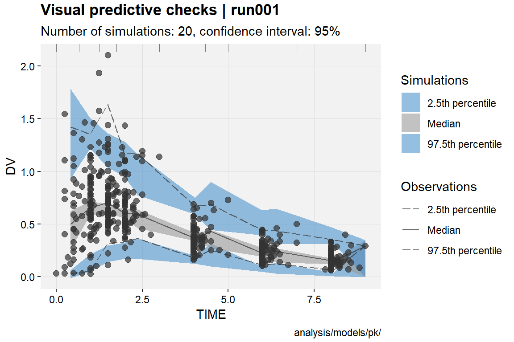
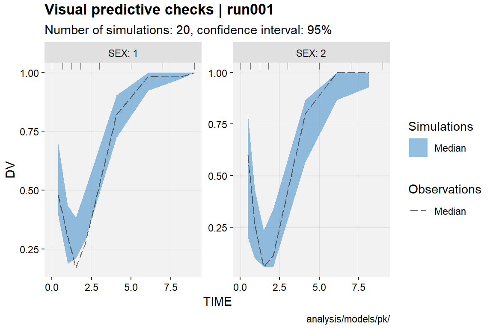

Visual Predictive Checks (VPC)
Benjamin Guiastrennec
16 August, 2018
Source:vignettes/vpc-2018-08-16_22-36-26-708.Rmd
vpc-2018-08-16_22-36-26-708.RmdDisclosure
The Visual predictive checks (VPC) shown below are only intended to demonstrate the various options available in xpose and should not be used as reference for modeling practice. Furthermore, the plots are only based on 20 simulations to minimize the computing time of the examples, the size of the xpdb_ex_pk object and of the xpose package in general.
Introduction
VPC can be created either by:
- Using an xpdb containing a simulation and an estimation problem
- Using a PsN generated VPC folder
The VPC functionality in xpose is build around the vpc R package. For more details about the way the vpc package works, please check the documentation website.
Workflow
The VPC computing and plotting parts have been separated into two distinct functions: vpc_data() and vpc() respectively. This allows to:
- Optimize the speed when adjusting the graphics aesthetics
- Adjust the VPC data (e.g. remove panels or factor labels) before plotting
- Facilitate error debugging

The generated VPC data is stored in the xpdb under specials datasets and can be used later on.
xpdb_w_vpc <- vpc_data(xpdb_ex_pk) # Compute and store VPC data
xpdb_w_vpc # The vpc data is now listed under the xpdb "special" datarun001.lst overview:
- Software: nonmem 7.3.0
- Attached files (memory usage 1.5 Mb):
+ obs tabs: $prob no.1: catab001.csv, cotab001, patab001, sdtab001
+ sim tabs: $prob no.2: simtab001.zip
+ output files: run001.cor, run001.cov, run001.ext, run001.grd, run001.phi, run001.shk
+ special: vpc continuous (#3)
- gg_theme: theme_readable
- xp_theme: theme_xp_default
- Options: dir = analysis/models/pk/, quiet = FALSE, manual_import = NULLvpc(xpdb_w_vpc) # Plot the vpc from the stored data
Multiple VPC data can be stored in an xpdb, but only one of each vpc_type.
xpdb_w_multi_vpc <- xpdb_ex_pk %>%
vpc_data(vpc_type = 'continuous', opt = vpc_opt(n_bins = 6, lloq = 0.1)) %>%
vpc_data(vpc_type = 'censored', opt = vpc_opt(n_bins = 6, lloq = 0.1))
vpc(xpdb_w_multi_vpc, vpc_type = 'continuous')
vpc(xpdb_w_multi_vpc, vpc_type = 'censored')
Common options
Options in vpc_data()
- The option
vpc_typeallows to specify the type of VPC to be computed: “continuous” (default), “categorical”, “censored”, “time-to-event”. - The
stratifyoptions defines up to two stratifying variable to be used when computing the VPC data. Thestratifyvariables can either be provided as a character vector (stratify = c('SEX', 'MED1')) or a formula (stratify = SEX~MED1) . The former will result in the use ofggforce::facet_wrap_paginate()and the latter ofggforce::facet_grid_paginate()when creating the plot. With “categorical” VPC the “group” variable will also be added by default. - More advanced options (i.e. binning, pi, ci, predcorr, lloq, etc.) are accessible via the
optargument. Theoptargument expects the output from thevpc_opt()functions argument.
xpdb_ex_pk %>%
vpc_data(vpc_type = 'censored', stratify = 'SEX',
opt = vpc_opt(bins = 'jenks', n_bins = 7, lloq = 0.5)) %>%
vpc()
Options in vpc()
- The option
vpc_typeworks similarly tovpc_data()and is only required if several VPC data are associated with the xpdb. - The option
smooth = TRUE/FALSEallows to switch between smooth and squared shaded areas. - The plot VPC function works similarly to all other xpose functions to map and customize aesthetics. However in this case the
area_fillandline_linetypeeach require three values for the low, median and high percentiles respectively.
Creating VPC using the xpdb data
To create VPC using the xpdb data, at least one simulation and one estimation problem need to present. Hence in the case of NONMEM the run used to generate the xpdb should contain several$PROBLEM. In vpc_data() the problem number can be specified for the observation (obs_problem) and the simulation (sim_problem). By default xpose picks the last one of each to generate the VPC.
# View the xpdb content and data problems
xpdb_ex_pkrun001.lst overview:
- Software: nonmem 7.3.0
- Attached files (memory usage 1.4 Mb):
+ obs tabs: $prob no.1: catab001.csv, cotab001, patab001, sdtab001
+ sim tabs: $prob no.2: simtab001.zip
+ output files: run001.cor, run001.cov, run001.ext, run001.grd, run001.phi, run001.shk
+ special: <none>
- gg_theme: theme_readable
- xp_theme: theme_xp_default
- Options: dir = analysis/models/pk/, quiet = FALSE, manual_import = NULL# Generate the vpc
xpdb_ex_pk %>%
vpc_data(vpc_type = 'continuous', obs_problem = 1, sim_problem = 2) %>%
vpc()
Creating the VPC using a PsN folder
The vpc_data() contains an argument psn_foler which can be used to point to a PsN generated VPC folder. As in most xpose function template_titles keywords can be used to automatize the process e.g. psn_folder = '@dir/@run_vpc' where @dir and @run will be automatically translated to initial (i.e. when the xpdb was generated) run directory and run number 'analysis/models/pk/run001_vpc'.
In this case, the data will be read from the /m1 sub-folder (or m1.zip if compressed). Note that PsN drops unused columns to reduce the simtab file size. Thus, in order to allow for more flexibility in R, it is recommended to use multiple stratifying variables (-stratify_on=VAR1,VAR2) and the prediction corrected (-predcorr adds the PRED column to the output) options in PsN to avoid having to rerun PsN to add these variables later on. In addition, -dv, -idv, -lloq, -uloq, -predcorr and -stratify_on PsN options are automatically applied to xpose VPC.
The PsN generated binning can also applied to xpose VPC with the vpc_data() option psn_bins = TRUE (disabled by default). However PsN and the vpc package work slightly differently so the results may not be optimal and the output should be evaluated carefully.